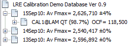
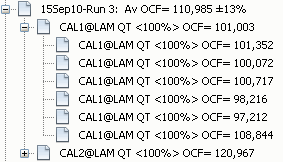
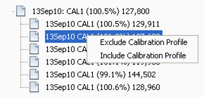
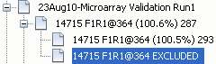
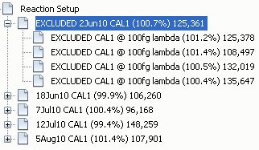
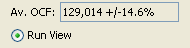

The Calibration Database Window root presents the name of the database, along with the average Fmax ±CV generated across all the runs contained within the database (see Fmax Normalization for more information regarding the average Fmax). All of the runs contained in the database are presented as a tree below this root node, which present the run data, name, and average OCF generated by the run's calibration profiles, along with a ±CV if more than one amplicon was included in the run, as is the case for these examples. The OCF box just above the tree panel presents the average OCF ±CV generated by all of the average calibration profiles contained within the database.
Calibration profiles
contained within a Run can be view by expanding a run branch by either
double clicking on the branch or clicking on the
 on the left of the branch:
on the left of the branch:

This presents the average calibration profiles conducted within the run, which in this case consisted of two calibration amplicons, CAL1 and CAL2, as indicated within the average profile labels. The sample name (LAM), Emax (fixed to 100% in this case) and corresponding OCF are also presented in the average profile labels.
Similarly, the replicate profiles can be viewed by expanding the average profile branch, which in this case consisted of six replicate reactions:

Note that the LRE analysis of the average profile is independent of that conducted on the replicate profiles.
Note also that a replicate calibration profile can be excluded/included by right clicking the profile:

"EXCLUDED" is added to the label to signify that this replicate profile is not included into the average profile:

This will then trigger recalculation of the average profile using the remaining replicate profiles, and automated LRE analysis conducted on the new average profile. An excluded replicate profile can also be included, and again the average profile is updated to include the including replicate profile.
Average profiles can also be deleted by right clicking and selecting "Delete Profile(s)". Note also that multiple average profiles or runs can be deleted simultaneously deleted by multiple selection using the Shift or Ctrl key:

IMPORTANT: Note that there is no undo function in this version of the LRE Analyzer, so once an average profile is deleted, there is no way to recovery it.
Also note that similar to a replicate profile, an average calibration profile can be excluded, which removes it from the average OCF (see below):

The primary function of a Calibration Database is to provide an average OCF, which is displayed above the profile tree:

The "Average Profile OCF" is derived from the average profiles, which is used to manually enter an OCF into an Experimental Database. The CV, which here is ±14.6%, provides an indication of the run to run variance. This introduces the second major functionality of optical calibration, which is to provide the ability to monitor run to run variability.
The function of the Run View button is described in the Sort View Panel.
See also:
Amplicon Database Window
Experiment Database Window